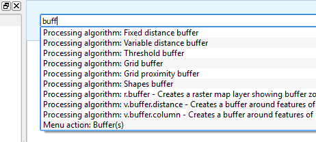
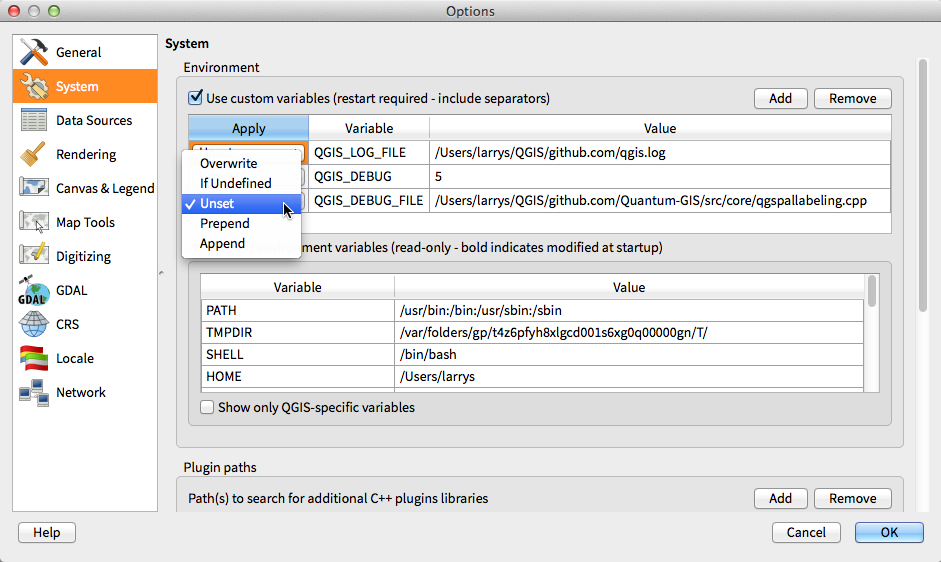
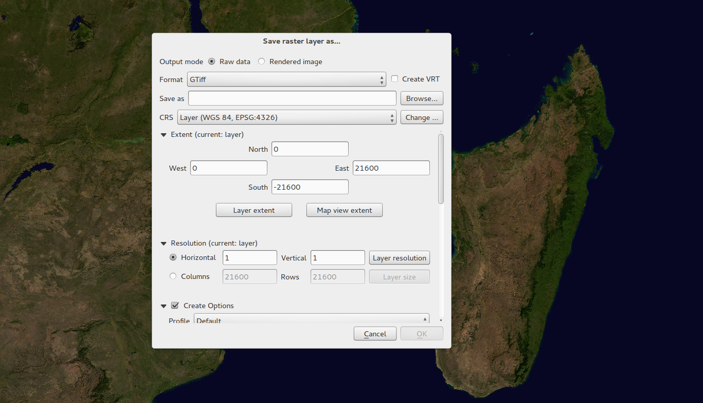
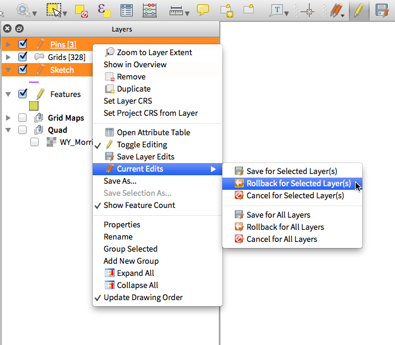
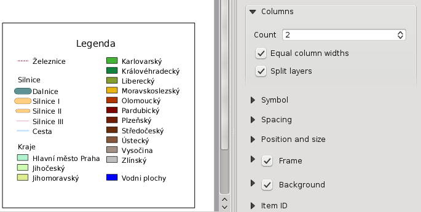
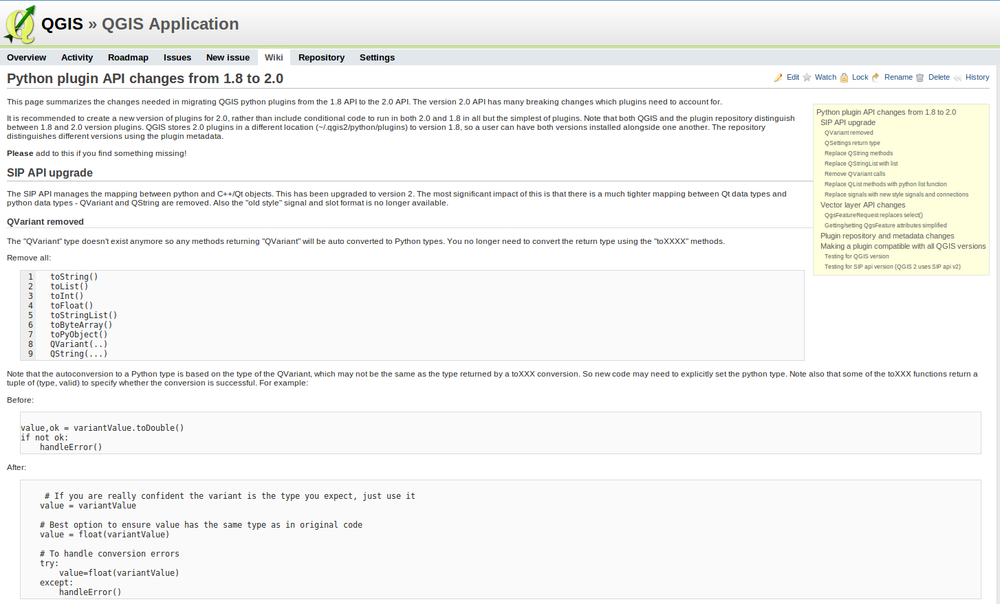

Log met wijzigingen voor QGIS 2.0¶
- Analyse-gereedschappen
- Opties voor toepassing en project
- Browser
- Gegevensproviders
- Algemeen
- Labels
- Laag Legenda
- Printvormgeving
- Mogelijkheid: HTML-items
- Mogelijkheid: Ondersteuning voor meerdere pagina’s
- Mogelijkheid: Expressies in labels Printvormgeving
- Mogelijkheid: Automatisch snappen aan lijnen
- Mogelijkheid: Handmatig snappen aan lijnen
- Mogelijkheid: Serie kaarten genereren
- Mogelijkheid: Ondersteuning voor automatische overzichtskaarten in kaartframe
- Mogelijkheid: Laag mengen
- Mogelijkheid: Ondersteuning voor HTML in labels
- Mogelijkheid: Meerdere kolommen voor legenda van Printvormgeving
- Mogelijkheid: Beheer van Printvormgeving bijgewerkt
- Plug-ins
- Programmeerbaarheid
- Symbologie
- Mogelijkheid: Data-bepaalde eigenschappen
- Mogelijkheid: Beheer symboollagen verbeterd
- Mogelijkheid: Ondersteuning voor transparantie in kleurdefinities
- Mogelijkheid: Kleurbeheer voor rasterlagen
- Mogelijkheid: Symbologie tussen lagen kopiëren
- Mogelijkheid: Stijl in uw database opslaan
- Mogelijkheid: Ondersteuning voor kleurovergangen
- Mogelijkheid: Standaard stijlen instellen voor alle typen lagen
- Gebruikers-interface
- Mogelijkheid: Nieuw thema pictogram
- Mogelijkheid: Zij-tabs, in te klappen groepen
- Mogelijkheid: Zachte mededelingen
- Mogelijkheid: Aangepast lettertype voor applicatie en Qt-stylesheet
- Mogelijkheid: Live dialoogvensters voor kleurkeuze en knoppen
- Mogelijkheid: SVG-annotaties
- Mogelijkheid: Formulieren bouwen met slepen en neerzetten
- Mogelijkheid: Gereedschap Standaardactie
Analyse-gereedschappen¶
Mogelijkheid: Processing - Commando’s¶
Start, voor snelle toegang tot de functionaliteit geoproccessing, de Processing Commando’s (Ctrl + Alt + M) en begin met het typen van de naam van het gereedschap waar u naar op zoek bent. Commando’s toont de beschikbare opties en zal deze voor u opstarten. Het is niet langer meer nodig om te zoeken via verschillende menu’s om de tools te vinden. Ze zitten direct onder uw vingertoppen.

Mogelijkheid: Verbeteringen plug-in Heatmap¶
De plug-in Heatmap is op een aantal punten verbeterd en geoptimaliseerd zodat de heatmaps (hittekaarten) sneller kunnen worden gemaakt. Aanvullend kunt u nu kiezen welke kernel-functie gebruikt moet worden om de heatmap aan te maken.

Mogelijkheid: Ondersteuning voor Processing¶
Het project SEXTANTE is geport en nu ook in QGIS ingebouwd als brononderdeel. SEXTANTE is hernoemd naar ‘Processing’ en introduceert een nieuw menu in QGIS van waaruit u toegang heeft tot een rijke gereedschapskist met gereedschappen voor ruimtelijke analyses. De Toolbox van Processing bevat veel functionaliteit die verder uitgebreid kan worden doordat de Python API het toestaat om toegang te bieden tot open source gereedschap beschikbaar in GRASS, OTB, SAGA enzovoorts en nieuw analysetools toe te voegen.

Mogelijkheid: Processing - Grafische modellen bouwen¶
Een prachtig onderdeel van het nieuwe framework Processing is de mogelijkheid om de gereedschappen grafisch te combineren. Gebruik makende van de Processing Grafische modellen bouwen kunt u complexe analyses bouwen door grafisch een aantal kleinere analysegereedschappen te combineren. Gebouwde modellen kunt u opslaan en vervolgens weer gebruiken als een analyseblokje van nog ingewikkelde modellen. De Processing Grafische modellen bouwen is een zeer krachtig geïntegreerd onderdeel in QGIS en eenvoudig te gebruiken!

Opties voor toepassing en project¶
Mogelijkheid: Standaard opstartproject en projectsjablonen definiëren¶
Met QGIS 2.0 kunt u specificeren wat QGIS moet doen bij het opstarten: Nieuw project (als vanouds, start met een nieuw leeg project), Meest recent (wanneer u QGIS start zal het het laatst geopende project weer openen), Specifiek (altijd een specifiek project laden wanneer QGIS wordt gestart). U kunt een projectmap voor sjablonen instellen waarin u uw sjablonen voor het project kunt bewaren. Elk project wat daarin is bewaard kan gekozen worden in de lijst van sjabloon-projecten die wordt getoond als menuselection:Project –> Nieuw van sjabloon wordt geselecteerd.

Mogelijkheid: Systeem omgevingsvariabelen¶
De systeem-omgevingsvariabelen kunnen nu worden bekeken en deze kunnen ook worden geconfigureerd via het dialoogvenster Opties. Dit is erg handig voor besturingssystemen zoals die op de Mac waarbij voor een grafische toepassing niet automatisch de omgevingsvariabelen erft van de shell-omgeving van de gebruiker. Ook handig om omgevingsvariabelen in te stellen die gebruikt worden door externe gereedschappen die o.a. gebruikt worden door de processing Toolbox, bijv. SAGA, GRASS; en ook voor het meer uitvoer genereren voor het opsporen van fouten voor bepaalde gedeelten van de broncode.

Mogelijkheid: gebruikergedefinieerde zoomschalen¶
Een lijst van schaalniveaus kan nu worden ingesteld voor de toepassing en ook per project. De lijst van schaalniveaus zal worden weergegeven in het pop-up combinatievak Schaal in de statusbalk van het hoofdvenster voor snelle toegang tot bekende schalen voor efficiënt weergeven en werken met de huidige gegevensbronnen. Gedefinieerde schaalniveaus kunnen worden geëxporteerd naar een XML bestand dat kan worden geïmporteerd in andere projecten of een andere toepassing van QGIS.

Browser¶
Mogelijkheid: Verbeteringen aan browser paneel binnen toepassing¶
- Mappen kunnen worden gefilterd met een wildcard (=jokerteken) of een reguliere expressie
- Nieuw
Project home(map van huidige project) Eigenschappenweergeven van geselecteerde folder in een dialoogvenster- Kiezen voor welke mappen “
Snel scannenmoet worden uitgevoerd - Kiezen voor
Map toevoegenaanFavoriete plaatsenvia standaard bestandsdialoogvenster - Nieuwe
/Volumesop de Mac, (verborgen folder voor toegang tot externe opslag zoals USB-sticks) - Nieuwe groep
OWS(samenvoeging van beschikbare verbindingen voor kaartservers) - Men kan nu een tweede browser scherm openen (
Beeld -> Panelen -> Browser (2)) zodat men gegevensbronnen tussen de twee browserpanelen kan slepen en neerzetten - Iconen zijn nu ingedeeld per groepstype (bestandssysteem, databases, map servers)
Laag eigenschappenheeft nu een betere visuele indeling

Gegevensproviders¶
Mogelijkheid: Raster-gegevensprovider vernieuwd¶
De raster gegevensprovider is volledig op de schop gegaan. Één van de beste nieuwe functies die hieruit voorkomt is de mogelijkheid via ‘Laag -> Opslaan als…’ elke rasterlaag op te slaan als een nieuwe laag. Tijdens het opslaan kunt u daarbij een bewerking clippen uitvoeren (knippen met masker), resamplen (andere kleurenindeling) en de laag projecteren naar een ander Coördinaten Referentie Systeem. U kunt ook een rasterlaag opslaan als een gerenderde afbeelding bijvoorbeeld nadat een éénbandsraster, waar een kleurenpalet is toegepast, kunt u deze gerenderde afbeelding opslaan als een RGB-rasterlaag met geo-verwijzingen.

Mogelijkheid: Ondersteuning voor Oracle Spatial¶
QGIS 2.0 bevat nu ondersteuning voor Oracle Spatial.

Mogelijkheid: Provider voor Web Coverage Service toegevoegd¶
QGIS ondersteunt nu standaard ook lagen van Web Coverage Service - het toevoegen van een WCS gebeurt op gelijke wijze als voor een laag van WMS of WFS.
Mogelijkheid: Raster standaard 2% cumulatief afgesneden¶
Veel rasterafbeeldingen hebben een groot aantal uitschieters die zorgen voor een vage weergave. QGIS 2.0 introduceert een meer precieze controle over het gedrag bij renderen/tekenen van een raster, waarbij alleen de kleuren die standaard vallen in het cumulatieve kleurenspectrum tussen de 2% - 98% procent worden meegenomen en die daardoor zorgen voor een meer heldere weergave. De hier weergegeven afbeelding geeft QGIS 1.8 (links) weer versus QGIS 2.0 (rechts) bij het renderen van dezelfde afbeelding met standaard instellingen.

Mogelijkheid: Indeling identificatie WMS¶
Het is nu mogelijk om het gereedschap Objecten identificeren te gebruiken voor lagen van WMS als meerdere bekende indelingen worden ondersteund door de server. De ondersteunde indelingen zijn HTML, objecten (GML) en tekst. Wanneer de indeling objecten (GML) is geselecteerd wordt het resultaat weergegeven in dezelfde vorm als vectorlagen, de geometrie kan worden geaccentueerd en de objecten, inclusief attribuutwaarden en geometrie, kunnen gekopieerd worden naar het klembord en geplakt worden in een andere laag.

Mogelijkheid: Ondersteuning voor WMTS¶
De WMS-cliënt in QGIS ondersteunt WMTS (Web Mapping Tile Service) waarbij de selectie van sub-gegevenssets ook wordt ondersteund zoals welk gedeelten van tijd getoond moet worden. Bij het toevoegen van een WMS-laag vanaf een daartoe geschikte server zult u worden gevraagd om het gedeelte van de tijd te selecteren dat weergegeven moet worden.

Algemeen¶
Mogelijkheid: Quantum GIS is nu nog alleen bekend al ‘QGIS’¶
Het ‘Quantum’ in ‘Quantum GIS’ had eigenlijk geen bijzondere betekenis en doordat ons project twee verschillende namen kende, Quantum GIS en QGIS veroorzaakte dat alleen maar verwarring. Als onderdeel van het verder stroomlijnen van het project is officieel besloten het woord Quantum niet langer meer te gebruiken. Het project gaat voortaan verder als QGIS (in hoofdletters). Alle code en gepubliceerd materiaal zal hierop worden aangepast.

Labels¶
Mogelijkheid: Nieuw systeem voor labels¶
Het nieuwe systeem voor labels is grondig verbouwd - het bevat nu veel nieuwe functionaliteit als achtergrond schaduwen, wegmarkeringen, veel meer data-gerelateerde opties en verschillende verbeteringen voor de uitvoering. De ‘oude’ manier van labels zijn we zo langzamerhand aan het verlaten, maar het is er nog wel in deze uitgave, maar houd er rekening mee dat deze in de volgende uitgave is verdwenen.

Mogelijkheid: Op expressie gebaseerd labeleigenschappen¶
De volledige kracht van de normale labels en regelexpressies kunnen nu ook voor labeleigenschappen worden gebruikt. Bijna elke eigenschap kan nu worden ingesteld met een expressie of een veldwaarde, zodat u meer controle heeft over het resultaat van het label. Expressies kunnen verwijzen naar een veld (bijv. de lettergrootte afhankelijk maken van de waarde van het veld ‘lettertype’) of kan een veel complexere logica bevatten.
Voorbeelden van gebonden eigenschappen omvatten:
- Lettertype
- Grootte
- Stijl
- Grootte van buffer

Mogelijkheid: Oude systeem voor labels vervallen¶
Gebruik van de oudere manier van labelen, zoals beschikbaar in QGIS <= 1.8 wordt afgeraden (komt te vervallen), maar is nog niet verwijderd. Het bestaat nog zodat gebruikers de mogelijkheid hebben om hun projecten bij te werken waarbij de oudere manier van labelen wordt vervangen door de nieuwe manier.
De volgende richtlijnen voor het werken met de oude mogelijkheid gelden in QGIS 2.0:
- De tab Labels wordt niet langer getoond in het menu Eigenschappen voor vectorlagen, wanneer het een nieuw project betreft of een ouder, geopend project waarbij de oudere manier van labelen niet is gebruikt.
- De vervallen tab blijft echter actief voor projecten opgeslagen in een oudere versie waarin een vectorlaag deze oudere manier van labelen nog gebruikt en gaat ook niet weg wanneer het project wordt opgeslagen zonder lagen die de oude manier van labelen hebben ingeschakeld.
De vervallen tab voor labels kan worden in-/uitgeschakeld voor het huidige project, via Python consoleopdrachten, bijv.:
>>> QgsProject.instance().writeEntry('DeprecatedLabels', '/Enabled', True | False)
# or
>>> QgsProject.instance().removeEntry('DeprecatedLabels', '/')
OPMERKING: Er is een grote kans dat de oudere manier van labels snel zal worden verwijderd, voorafgaande aan de volgende stabiele versie van QGIS. Migreer derhalve de oudere projecten.

Laag Legenda¶
Mogelijkheid: Legenda visuele info en opties¶
- Totaal aantallen objecten in een laag en ook per symbool
- Vectorlagen in mode bewerken, hebben nu een rood potlood om aan te geven dat er nog niet opgeslagen wijzigingen aanwezig zijn.
- De actieve laag wordt nu onderlijnd zodat deze is aangegeven zelfs wanneer er meerdere lagen zijn geselecteerd of geen laag is geselecteerd
- Door te klikken in de witruimte van de legenda van niet-lijst onderdelen wordt de selectie ongedaan gemaakt
- Klikken op de rechter muisknop wordt hetzelfde behandeld als de linker muisknop, voorheen voor het starten van het contextuele snelmenu, zodat er met één muisklik hetzelfde kan worden bereikt als voorheen met twee muisklikken
- Groepen en lagen kunnen nu optioneel in een vet lettertype worden weergegeven
- Voor Rasterlagen gemaakte voorbeeldpictogrammen kunnen nu uitgezet worden, omdat het tekenen daarvan vertragend kan werken

Mogelijkheid: Bestaande kaartlaag dupliceren¶
Geselecteerde vector- en rasterlaag in de kaartlegenda dupliceren. Vergelijkbaar met het nogmaals inlezen van dezelfde kaart, als een afzonderlijke laag, maar daarbij worden dan ook de stijl en attributen voor symbologie mee gekopieerd.

Mogelijkheid: Meerdere lagen schakelopdrachten voor bewerken¶
Een gebruiker kan nu meerdere lagen selecteren in de legenda en, als er een aantal daarvan in de modus Bewerken staan, kiezen om wijzigingen op te slaan, terug te draaien of nog niet opgeslagen wijzigingen ongedaan maken. De gebruiker kan er ook voor kiezen om deze acties over alle lagen uit te voeren, ongeacht de selectie.

Printvormgeving¶

Mogelijkheid: Ondersteuning voor meerdere pagina’s¶
Één venster van Printvormgeving kan nu meer dan één pagina bevatten.

Mogelijkheid: Expressies in labels Printvormgeving¶
Het label in Printvormgeving in 1.8 was nogal beperkt en alléén $CURRENT_DATE kon worden gebruikt. In 2.0 is volledige ondersteuning voor expressies toegevoegd, waarmee men veel meer controle heeft gekregen over de te plaatsen labels.
Een label met een expressie als:
This was printed on: [% format_date( $now, 'dd.MM.yyyy')%]
zal bij afdrukken (en weergeven) worden geëvalueerd om te genereren:
This was printed on: 06.09.2013
Als Atlas-generatie is ingeschakeld zullen de waarden van attributen van de huidige actieve objecten ook toegankelijk zijn in de expressies, wat dingen mogelijk maakt als:
Asset ID [% "ID" %] and the Tree Type is [% "TreeType" %]

Mogelijkheid: Automatisch snappen aan lijnen¶
Kaartonderdelen goed uitgelijnd te krijgen is essentieel voor het afdrukken van mooie kaarten. Lijnen om automatisch aan te snappen zijn toegevoegd om het mogelijk te maken objecten voor de lay-out beter uit te lijnen door een object dicht naar een ander object te slepen.

Mogelijkheid: Handmatig snappen aan lijnen¶
Soms is het nodig om objecten op een bepaalde afstand uit te lijnen in de Printvormgeving. Met het nieuwe handmatige snappen aan lijnen kunt u handmatig snaplijnen toevoegen die een betere gelijke uitlijning van objecten mogelijk maakt. Sleep eenvoudig van de bovenkant of van de liniaal aan de zijkant een nieuwe snaplijn in de kaart.

Mogelijkheid: Serie kaarten genereren¶
Ooit een serie kaarten in één keer moeten genereren? Natuurlijk heeft u dat al eens gedaan. De Printvormgeving bevat nu het generen van een serie kaarten waarbij gebruik wordt gemaakt van de functionaliteit Atlas. De af te drukken gebiedslagen kunnen punten, lijnen, polygoonvlakken zijn en de actieve object gegevens van attributen zijn beschikbaar in labels die dynamisch door een waarde vervangen kunnen worden.

Mogelijkheid: Ondersteuning voor automatische overzichtskaarten in kaartframe¶
Behoefte om te laten zien waar het getoonde gebied van de hoofdkaart zich bevindt in een kleinere overzichtskaart. Het kaartframe heeft nu de mogelijkheid om een ander bereik te selecteren waarbij dit automatisch wordt bijgewerkt bij verplaatsing. Indien gebruikt in combinatie met Atlas-generatie, wat eveneens een standaard onderdeel is geworden van de Printvormgeving kunt u erg mooie kaarten maken. De mogelijke stijlen die gebruikt kunnen worden voor het maken van het frame van de overzichtskaart zijn dezelfde als voor een normaal polygoon object, dus uw creatitviteit wordt nooit beperkt.

Mogelijkheid: Laag mengen¶
Het mengen van lagen maakt het mogelijk om lagen te combineren op nieuwe verrassende manieren. In de oudere versies kon je lagen transparant maken, maar nu kun je ervoor kiezen uit veel geavanceerdere manieren zoals “multiply”, “darken only” en nog veel meer.
Mengen kan worden gebruikt in de normale kaartweergave, maar ook in Printvormgeving. Bekijk, voor een korte handleiding over hoe mengen te gebruiken om het meeste uit de achtergrond te halen, “Vintage map design using QGIS”.

Mogelijkheid: Ondersteuning voor HTML in labels¶
HTML-ondersteuning is toegevoegd voor labels in Printvormgeving voor nog meer controle over de uiteindelijke kaart. De HTML ondersteuning voor labels bevat het gebruik van CSS-stylesheets, HTML en zelfs het gebruik van Javascript.

Mogelijkheid: Meerdere kolommen voor legenda van Printvormgeving¶
De legenda in de Printvormgeving ondersteunt nu het gebruik van een legenda die is opgebouwd uit meerdere kolommen. Opsplitsen van een enkele laag, die bestaat uit veel klassen is optioneel. Enkele symboollagen worden standaard als item van één regel toegevoegd. Drie verschillende stijlen kunnen worden toegevoegd aan een laag/groep titel: Groep, Subgroep of Verborgen. Met de titels voor de legenda kunnen kaartonderdelen in de legenda onderverdeeld worden in groepen. Een laag met een enkel symbool kan getoond worden als een labelitem bestaand uit 1 regel of met een een laagtitel (zoals in 1.8), vervolgens kunnen volgende lagen gegroepeerd worden tot één enkele groep (door het verbergen van de titels etc.) Een telling van het aantal kaartobjecten kan toegevoegd worden aan de titel.

Mogelijkheid: Beheer van Printvormgeving bijgewerkt¶
De volgende verbeteringen zijn gemaakt aan het beheer van Printvormgeving:
- De naam van Printvormgeving kan nu worden gegeven bij het aanmaken ervan, waarbij optioneel gekozen kan worden uit andere namen voor Printvormgeving
- Lay-outs kunnen nu worden gedupliceerd
Nieuw van Templateen vanSpecifiek(in Printvormgeving Manager) maakt een printvormgeving vanuit een reeds opgeslagen template- Het ouder-project kan direct worden opgeslagen vanuit de werkruimte van Printvormgeving
- Alle beheersacties voor printvormgeving zijn direct beschikbaar vanuit de werkruimte van Printvormgeving

Plug-ins¶
Mogelijkheid: Vernieuwd beheer plug-ins¶
In QGIS 1.x was het beheren van plug-ins enigszins verwarrend door het gebruik van twee menu’s. Één menu voor het beheren van geïnstalleerde plug-ins en één voor het ophalen van nieuwe plug-ins uit de opslagplaats van plug-ins. In QGIS 2.0 is er één samengevoegde plug-in manager waarmee je het volledige beheer voor plug-ins kunt doen; zoeken, downloaden, in-/uitschakelen. En daarnaast ziet de gebruikersinterface er super uit met zij-tabbladen en eenvoudig te herkennen pictogrammen!

Programmeerbaarheid¶
Mogelijkheid: Nieuwe console voor Python¶
De nieuwe console voor Python geeft u nog meer controle. Deze heeft nu de functie Automatisch aanvullen, markering voor syntaxis en het lettertype kan worden aangepast. Er is ook een codebewerker toegevoegd waarmee grotere stukken code voor Python kunnen worden geschreven en bestanden van Python kunnen worden geladen en gestart in de sessie van QGIS.

Mogelijkheid: Nog meer functies voor expressies¶
De expressie engine wordt op steeds meer plekken in QGIS beschikbaar, waarmee bijvoorbeeld labels kunnen worden opgebouwd met gebruik van reguliere expressies, waarbij de expressiebouwer een belangrijk hulpmiddel is. Voor alle functies voor expressies zijn uitvoerige helpteksten en gebruiksaanwijzingen beschikbaar.

Mogelijkheid: Aangepaste functies voor expressies¶
Wanneer de expressie engine niet die functie heeft die u nodig hebt, kan er een nieuwe functie worden toegevoegd via een plug-in, met behulp van een eenvoudige Python API.

Mogelijkheid: Nieuwe opgeruimde Python API¶
De Python API is aangepast zodat deze nog meer overeenkomt met standaarden voor Python die zorgen voor een betere beleving van het programmeren in Python. QGIS 2.0 gebruikt SIP V2 die onder andere voor zorgt dat er minder conversies van waarden nodig zijn met functies zoals toString(), toInt(). Typen worden nu direct geconverteerd naar standaardtypen voor Python die zorgen voor een prettigere API. Het opvragen van veldwaarden kan nu bijvoorbeeld gebeuren op het object zelf met een eenvoudige sleutelwaarde waar dat voorheen een stuk lastiger was waarbij indexen en attributen maps moesten worden gebruikt.
>>> feature['mycolumn'] = 10
>>> feature['mycolumn']
10
De manier waarop objecten uit een laag worden gelezen is ook verbeterd, wat multithreading in de toekomstige versies mogelijk maakt.
for feature in layer.getFeatures():
print feature['mycolumn']

Feature: Compatibiliteit code met uitgaven versie 1.x¶
Omdat dit een major release betreft, is de API niet volledig compatibel met de voorgaande versies 1.x. In de meeste gevallen is het porten van de code vrij eenvoudig - u kunt om te beginnen deze handleiding gebruiken als start. Ga naar de developer mailing lijst als u meer hulp nodig hebt.

Mogelijkheid: Python projectmacro’s¶
Een module voor Python, die mee wordt opgeslagen in een project.qgs bestand, kan worden geladen en kan functies bevatten die worden gestart tijdens de volgende project events:
openProject()saveProject()closeProject()
Of de macro’s moeten worden uitgevoerd kan worden ingesteld via de opties voor de toepassing.

Symbologie¶
Mogelijkheid: Data-bepaalde eigenschappen¶
Met de nieuwe data-gedefinieerde eigenschappen, is het mogelijk om symbooltype, grootte, kleur, rotatie en veel andere eigenschappen in te stellen via de attributen van de objecten.

Mogelijkheid: Beheer symboollagen verbeterd¶
Het nieuwe overzicht van symboollagen gebruikt een duidelijke boomstructuur die eenvoudige en snelle toegang geeft tot alle symboollagen.

Mogelijkheid: Ondersteuning voor transparantie in kleurdefinities¶
Op de meeste plaatsen in QGIS waar je kleuren kunt kiezen kun je nu ook het alfakanaal instellen (waarmee je de mate van transparantie kunt instellen). Dit draagt bij aan het maken van kaarten die er erg goed uitzien waarbij u ook gegevens kunt verbergen waarvan u niet wilt dat die zichtbaar zijn voor gerbuikers.

Mogelijkheid: Kleurbeheer voor rasterlagen¶
QGIS 2.0 geeft u meer controle over hoe de rasterlagen eruit komen te zien. U hebt nu de volledige controle over lichtsterkte, contrast en verzadiging van kleuren van rasterlagen. Er zijn ook opties die rasters kunnen tonen in grijstinten of in één bepaalde kleur.

Mogelijkheid: Symbologie tussen lagen kopiëren¶
Het is nu erg simpel geworden om de symbologie van de ene naar een andere laag te kopiëren. Wanneer u werkt met meerdere gelijksoortige lagen, kunt u onder de rechtermuisknop in het snelmenu de optie Stijl kopiëren kiezen en deze, via de rechter muisknop in een andere laag overbrengen via de optie Stijl plakken.

Mogelijkheid: Stijl in uw database opslaan¶
Als u vectorgegevens opslaat in een database, dan kan nu ook de stijldefinitie van de laag direct mee worden opgeslagen. Dit maakt het eenvoudig om lagen met de gegeven stijl te delen binnen een ondernemings-omgeving of met meerdere gebruikers.

Mogelijkheid: Ondersteuning voor kleurovergangen¶
Kleurovergangen zijn nu beschikbaar op veel plaatsen onder QGIS instellingen voor symbologie, en QGIS komt met een rijke set aan kleurovergangen. Je kunt ook je eigen kleurovergang ontwerpen en veel cpt-city thema’s voor cpt-city zijn nu ‘out of the box’ toegevoegd in QGIS. De kleurovergangen ondersteunen ook transparantie!

Mogelijkheid: Standaard stijlen instellen voor alle typen lagen¶
Nu laat QGIS u beheren hoe nieuwe lagen zullen worden getekend als zij geen bestaande .qml-stijl hebben gedefinieerd. U kunt ook de standaard transparantie die moet worden toegekend aan nieuwe lagen instellen en of symbolen Willekeurige kleuren toegekend moeten krijgen.

Gebruikers-interface¶
Mogelijkheid: Nieuw thema pictogram¶
We hebben ons thema voor pictogrammen bijgewerkt om het thema ‘GIS’ te gebruiken zodat QGIS een meer consistent en professioneler uiterlijk heeft gekregen.

Mogelijkheid: Zij-tabs, in te klappen groepen¶
We hebben de lay-out van tabbladen gestandaardiseerd en de inklapbare groepen geïntroduceerd in veel van onze dialogen om het navigeren door de verschillende opties makkelijker te maken en ook beter gebruik te maken van het scherm.

Mogelijkheid: Zachte mededelingen¶
In veel gevallen willen we een mededeling doen, maar we willen niet dat dit uw werkzaamheden onderbreekt. Met het nieuwe systeem voor mededelingen kan QGIS belangrijke informatie via een gele berichtenbalk, die zich boven het kaartvenster bevindt, tonen. Maar zo’n mededeling zal uw werkzaamheden niet onderbreken wanneer u ergens anders mee bezig bent. Ontwikkelaars kunnen ook mededelingen maken die getoond worden (bijvoorbeeld vanuit de plug-in) via onze python API.

Mogelijkheid: Aangepast lettertype voor applicatie en Qt-stylesheet¶
Het systeemlettertype voor de gebruikersinterface van de toepassing kan nu worden ingesteld. Elke plug-in voor C++ of Python die een kind is van de QGIS GUI-toepassing of die het GUI-stylesheet van de toepassing heeft gekopieerd/toegepast, kan de stijl erven. Dit is erg handig zodat de GUI kan worden aangepast voor de verschillende platformen en wanneer aangepaste QGIS Qt-widgets worden gebruikt zoals de QgsCollapsibleGroupBox.
Toegang tot het gegenereerde QGIS GUI-toepassing stylesheet voor het huidige platform kan worden verkregen nadat het is opgestart (in PyQGIS):
qgis.utils.iface.mainWindow().styleSheet()

Mogelijkheid: Live dialoogvensters voor kleurkeuze en knoppen¶
Elke knop voor het kiezen van kleuren van de toepassing is bijgewerkt zodat direct zichtbaar wordt wat er is gewijzigd of wanneer de huidige kleur een transparante, of ‘alfa’-component heeft. De kleurenkeuze opent nu standaard met de nieuwe kleurenknoppen zoals ingesteld voor het besturingssysteem. Als de gebruiker de optie Gebruik directe kleurenkeuze dialogen bijwerken selecteert onder dan zal elke wijziging in de kleurenkeuze direct zichtbaar zijn in de kleurenknoppen en elk object dat word bewerkt waar toepasbaar.

Mogelijkheid: SVG-annotaties¶
Met QGIS 2.0 kunt u nu SVG-labels toevoegen aan de kaart - ofwel plaatsgebonden of op een relatieve positie in het kaartvenster.

Mogelijkheid: Formulieren bouwen met slepen en neerzetten¶
QGIS 2.0 ondersteunt ene fantastisch nieuw systeem voor het maken van formulieren voor invoer van gegevens. Met de formulierontwerper die kan slepen en neerzetten kunt u goed uitziende formulieren maken met tabs om algemene velden te groeperen. Het is nu veel eenvoudiger om de ervaring va het invoeren van gegevens door uw gebruikers te beheren.

Mogelijkheid: Gereedschap Standaardactie¶
Als u een gebruiker bent van acties op vectorlagen (kleine taken die kunnen worden uitgevoerd als u op ene object klikt), zult u blij zijn met het nieuwe gereedschap Actie op de werkbalk. Daarmee kunt u een actieve actie selecteren en dan op uw objecten klikken om die actie uit te voeren.